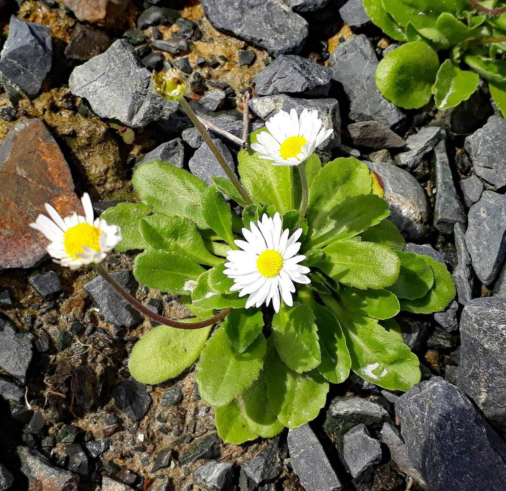
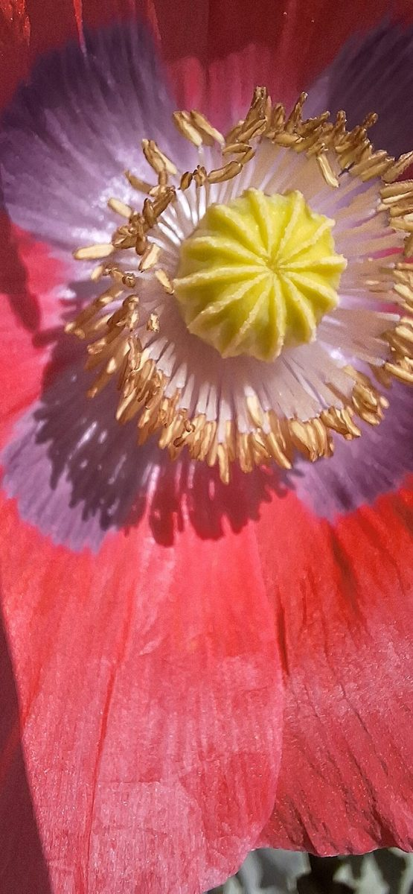

店のこと
六つの部位の配置図
お店の詳しい情報は準備中です。ここでは、制作側が考えたデザインの見かたをご紹介します。
制作側の連想
番号は、部位の番号
ホームの図にある1〜6の番号は、それぞれ部位の名前に対応します。制作側の連想で、お店の理念・由来とは無関係です。実際の楽器の仕様を示すものでもありません。
1
音板
叩いて音を出す、長さの違う金属の板。
2
枠
音板を並べて支える、台形のフレーム。
3
支持フェルト
音板の下に敷く、細い帯状のクッション。
4
止めピン
音板がずれないように通す、小さな棒。
5
撥の頭
音板に当てる、先端の丸い部分。
6
撥の柄
手に持つ、細い棒の部分。
ギャラリー(イメージ)
コーヒー豆の写真


写真はコーヒー豆のイメージです。お店のものではありません。
写真イメージ
花の写真(イメージ)




写真は花のイメージです。お店のものではありません。